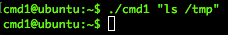
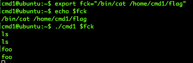
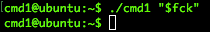
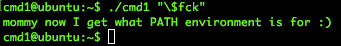

Hi. In this post I'm going to talk about a CTF game which tries to avoid code execution with a simple filter and how it's possible to bypass that filter. The code is the following one: #include <stdio.h> #include <string.h> int filter(char* cmd){ int r=0; r += strstr(cmd, "flag")!=0; r += strstr(cmd, "sh")!=0; r += strstr(cmd, "tmp")!=0; return r; } int main(int argc, char* argv[], char** envp){ putenv("PATH=/fuckyouverymuch"); if(filter(argv[1])) return 0; system( argv[1] ); return 0; } In the code, the C program is taking one parameter. It seems that the parameter can't contain the strings "flag", "sh" or "tmp". The program does nothing if we use one of them:  What do you think about the PATH env. variable modification? It's modifying our PATH. Programs like "cat" or "ls" won't be available for us so we will have to use the complete path to them ("/bin/cat", "/bin/ls" ...). Usually, CTF games should have a tip. It says "Mommy! what is PATH environment in Linux?". Would it be possible to use a command inside a environment variable? Using it we could bypass the filter and try to execute code in the system call. Let's see:  After checking that the environment variable has been created, we call to the program with the environment variable. The screeshot shows that everything we write it's being returning to us. Why? Because the "cat" command is waiting for his input. We have to fix it. Maybe quoting it?  Nope. The answer is easy... the "$" gets the value of that variable but as a String, it's sharing the literal word inside the quotes. It's necessary to escape it with "\":  You need the idea but everything could be debugged with gdb or radare2 ;) See you!